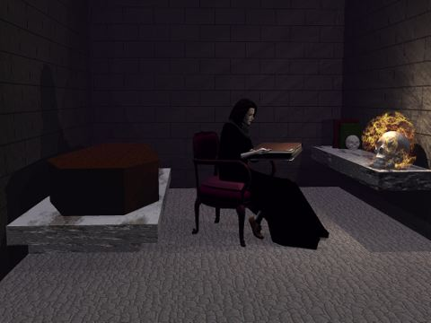
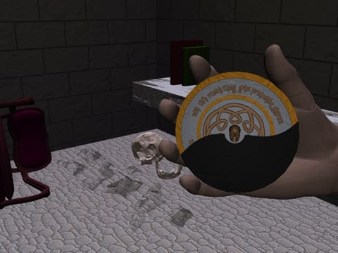

Both images were rendered using
Bryce 4. Ferranifer herself
was posed in Poser 4 before
being imported into Bryce. Her dress is from the
Zygote Costume Shop CD. The chair she is
sitting on is also from Zygote. The skull is from
Poser 4, while the
volumetric fire surrounding it was created by Menno (but is no longer available online). The books are from the
Avalon
archive of free meshes. The skull bookend was made using
Amorphium, while
the coffin and the Amulet of the Void were modelled in
Cinema 4D GO.
The stone block texture on the walls and the
wood texture for the coffin were generated using
POV-Ray, an amazing free raytracer.